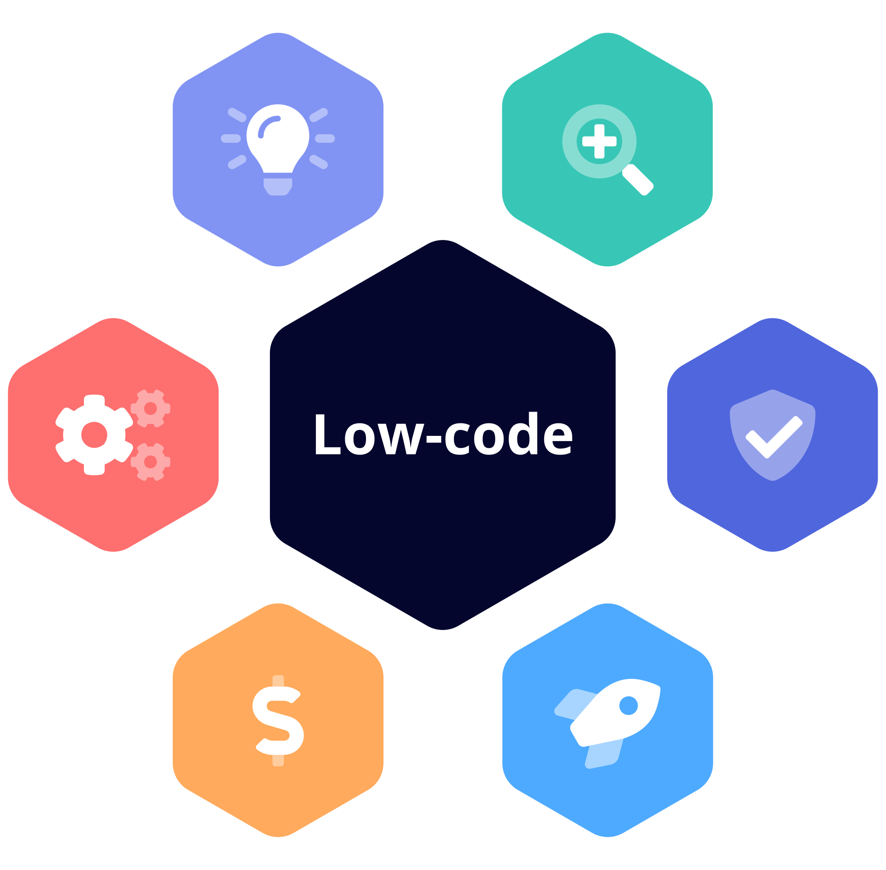
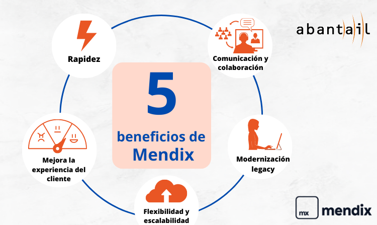
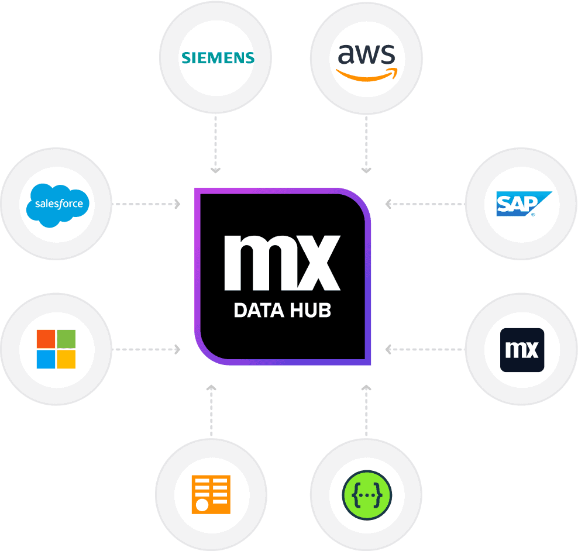

Mendix es una plataforma de desarrollo low-code (código bajo) habilitada para IA que permite a empresas crear, desplegar y mantener aplicaciones empresariales web y móviles de forma más rápida y eficiente utilizando herramientas visuales y componentes preconstruidos, en lugar de escribir código tradicional. Esta plataforma, ahora parte de Siemens Digital Industries Software, acelera la transformación digital de las empresas al facilitar la colaboración entre desarrolladores y expertos de negocio para entregar aplicaciones personalizadas que se integran con sistemas existentes.
Low-Code
Low-code es un enfoque de desarrollo de software que permite crear aplicaciones de manera rápida mediante herramientas visuales, componentes prediseñados y configuraciones sencillas, reduciendo al mínimo la necesidad de escribir código manual; su objetivo es acelerar el desarrollo, facilitar la colaboración entre equipos técnicos y no técnicos, y simplificar la implementación de soluciones digitales sin perder la posibilidad de personalización cuando sea necesario.

Ventajas de trabajar con Mendix
Desarrollo rápido: permite crear aplicaciones en semanas en lugar de meses gracias a su enfoque visual y componentes reutilizables.
Colaboración entre equipos: incluye herramientas para que tanto desarrolladores como usuarios de negocio trabajen juntos en el mismo proyecto.
Integraciones fáciles: ofrece conectores listos para bases de datos, APIs, servicios en la nube y sistemas empresariales (como SAP o Salesforce).
Escalabilidad y flexibilidad: soporta aplicaciones simples hasta sistemas empresariales complejos, tanto en la nube como en local.
Multi-dispositivo: facilita la creación de apps web y móviles con una sola base de desarrollo
Automatización y microservicios: permite implementar flujos de trabajo, procesos de negocio y arquitecturas modernas sin tanto código.
Seguridad empresarial: cuenta con estándares de seguridad integrados (control de acceso, autenticación, auditorías).
Soporte de IA y automatización: incluye funciones para integrar inteligencia artificial y optimizar procesos.

Casos de uso de Mendix
Mendix se utiliza en casos de uso como la automatización de procesos empresariales, la creación de aplicaciones móviles y web multiplataforma, el desarrollo de portales para clientes y empleados, la integración con sistemas existentes como SAP, Salesforce o bases de datos corporativas, y la construcción de soluciones escalables en la nube que permiten a las organizaciones innovar rápidamente, reducir costos de desarrollo y responder con agilidad a las necesidades del negocio.
Siemens
Enexis
PwC
CareerValue
Jobbird

Recursos de aprendizaje
Para aprender a usar Mendix existen diversos recursos como la Mendix Academy, que ofrece cursos gratuitos y certificaciones oficiales; la documentación oficial con guías paso a paso y ejemplos prácticos; la comunidad en línea, donde usuarios comparten experiencias, plantillas y soluciones; además de tutoriales en YouTube, blogs especializados y foros de discusión que facilitan adquirir conocimientos desde lo básico hasta el desarrollo avanzado de aplicaciones empresariales.